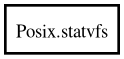

Posix.statvfs – posix Reference Manual
Packages
posix
Posix
statvfs
f_bavail
f_bfree
f_blocks
f_bsize
f_favail
f_ffree
f_files
f_frsize
statvfs
Object Hierarchy:

Description:
[
CCode
( cname =
"struct statvfs"
, has_type_id =
false
) ]
public
struct
statvfs
Namespace:
Posix
Package:
posix
Content:
Fields:
public
ulong
f_bsize
public
ulong
f_frsize
public
fsblkcnt_t
f_blocks
public
fsblkcnt_t
f_bfree
public
fsblkcnt_t
f_bavail
public
fsfilcnt_t
f_files
public
fsfilcnt_t
f_ffree
public
fsfilcnt_t
f_favail